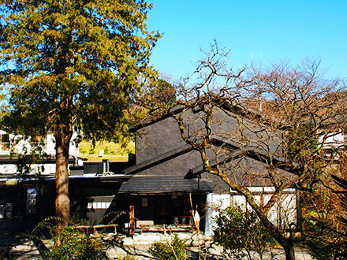
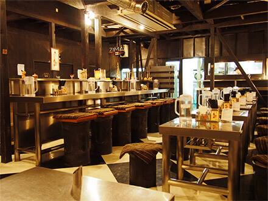
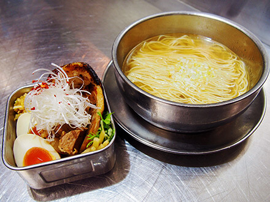

「AFURI」という名前は、神奈川県丹沢山系の東端に位置する大山(通称・阿夫利山)に由来。この阿夫利山の麓から湧き出る清らかな天然水でスープを仕込んでいることから、「AFURI」と名付けました。
富士山の父にあたる山として、古来から愛され続けてきた阿夫利山。そもそもは“雨降山（あめふりやま）”とも呼ばれ、人々から五穀豊穣の願いを託される神の山でもありました。また、その雄大で凛とした姿は人々を魅了し、江戸時代には年間数十万人もの参拝者が訪れたと言われます。我々「AFURI」も現代の江戸の街・東京で、人々を幸せにする存在でありたいと思っています。
AFURIのらーめんを仕込んでいるのは、阿夫利山の麓、神奈川県厚木市七沢に構える「セントラルキッチン」。阿夫利山の天然水に、国産の丸鶏、魚介、香味野菜を贅沢に入れ炊き上げるスープ。少し沸騰するだけで味も香りも変わってしまうほど繊細なその味は、気候、湿度、火加減、時間のすべてを緻密に計算しつくっています。らーめんの味を司る、特製の塩ダレ・醤油ダレ。チャーシューなども、すべてセントラルキッチンでその日のベストの味を追求したもの。阿夫利山の麓で毎日仕込み、各店舗で丁寧に調理し、お客様に提供しています。
Higher
We’re named after a mountain—Mt. AFURI, on the east edge of the Tanzawa mountains in Kanagawa prefecture. Legend has it Afuri is the father of Mt. Fuji.
Afuri has long been known for its waters, and in days past, it was considered a sacred mountain of good harvest, and thousands would journey to Mt. Afuri every year in pilgrimage. We like to think we’re bringing sacred Mt. Afuri to the rest of the world. The mountain provides us with a kind of philosophy. It can be a little tricky to translate it literally from Japanese, but let’s just call it “Higher.” We push higher in everything we do—everything, from pickling to serving—and we intend to reach for excellence as long as we are AFURI. Mt. Afuri remains—straight, honest, steadfast, dependable. That’s our aim. One ramen. One staff. Always higher.
Our Ramen
AFURI ramen is different from ramen you’ve had elsewhere. It’s lighter, refreshing—even a little delicate. We’re particular about all our ingredients—but there’s one ingredient in particular that makes AFURI ramen special. We make our signature ramen with yuzu, a small yellow citrus fruit native to Asia. We splash it in our fresh chicken broth and we garnish it on top, too. It adds a touch of freshness to our ramen and pairs perfectly with our broth and charcoal-grilled pork. We think of it as a thoughtful, refreshing update on everything that makes ramen so great.
- 社名
- AFURI株式会社
- 代表取締役
- 中村 比呂人
- 設立
- 平成7年11月20日
- 資本金
- 3,000万円
- 取引金融機関
- 三井住友銀行、三菱東京UFJ銀行、横浜銀行、八千代銀行、みずほ銀行、商工中金、北陸銀行
- 東京オフィス
- 東京都目黒区上目黒1-18-6 NMビル4F
- (代表)TEL:03-5734-1408 / FAX:03-5734-1409
- 厚木オフィス
- 神奈川県厚木市恩名2-1-23
- TEL:046-221-7352 / FAX:046-224-0221
- Company name.
- AFURI Inc.
- CEO.
- Hiroto Nakamura
- Establishment.
- November 20, 1995
- Capital.
- ¥30 million
- Main Bank.
- Sumitomo Mitsui Banking Corporation, Bank of Tokyo-Mitsubishi UFJ, Ltd., The Bank of Yokohama, Ltd., The Yachiyo Bank, Limited, Mizuho Bank, Ltd., The Shoko Chukin Bank, Ltd., The Hokuriku Bank, Ltd.
- Tokyo Branch.
- 4F, NM Bldg, 1-18-6 Kamimeguro, Meguro-ku, Tokyo, Japan
- Main Phone, 03-5734-1408 / Facsimile, 03-5734-1409
- Atsugi Headquarters.
- 2-1-23 Onna, Atsugi-shi, Kanagawa, Japan
- Phone, 046-221-7352 / Facsimile, 046-224-0221
- 2001年
- 「ZUND-BAR」をオープン。神奈川県厚木市七沢阿夫利山の麓に誕生。
- 2003年
- 「AFURI 恵比寿」（東京一号店）をオープン。「ZUND-BAR」のらーめんをより多くのお客様に味わっていただくため、オープンキッチン・カウンターで提供するスタイルで開業。
- 2009年
- 「AFURI 原宿」オープン。
- 2011年
- 「AFURI 中目黒」オープン。
- 2013年
- 「AFURI 麻布十番」オープン。
- 2014年
- 「AFURI 六本木交差点」「AFURI 三軒茶屋」「AFURI 六本木ヒルズ」をオープン。
- 2015年
- 「AFURI 横浜ジョイナス」オープン。
- 2016年
- 「AFURI 新宿」
「AFURI ポートランド1号店 (AFURI ramen + izakaya)」オープン。 - 2017年
- 「AFURI トマム」
「AFURI ポートランド2号店 (AFURI ramen + dumplings)」オープン。 - 2018年
- 「AFURI 横浜ランドマークタワー」
「AFURI リスボン (AFURI Lisbon)」
「AFURI 飯能メッツァビレッジ」オープン。 - 2019年
- 「東京中目黒オフィス」を開設
「AFURI 恵比寿」リニューアルオープン
「AFURI辛紅 池袋」
「AFURI シンガポール」オープン
「AFURI辛紅 新宿サブナード」オープン
「AFURI 六本木ヒルズ」移転リニューアルオープン
「AFURI 南町田グランベリーモール」オープン
「AFURI 新Central Kitchen」竣工
- 2001
- " ZUND-BAR " opened.Suits on foot of Mt. Afuri in Atsugi, Kanagawa Prefecture west next to Tokyo.
- 2003
- " AFURI Ebisu " opened.Our first Tokyo store with open kitchen style seats. Our passion became true to offer our ZUND-BAR Ramen throughout the world.
- 2009
- " AFURI Harajuku " opened.
- 2011
- " AFURI Nakameguro " opened.
- 2013
- " AFURI Azabujuban " opened.
- 2014
- " AFURI Roppongi Crossing " , " AFURI Roppongi Hills " and " AFURI Sangenjaya " opened.
- 2015
- " AFURI Yokohama Joinus " opened.
- 2016
- " AFURI Shinjuku " , " AFURI ramen + izakaya (Portland) " opened.
- 2017
- " AFURI Tomamu " , " AFURI ramen + dumplings (Portland) " opened.
- 2018
- " AFURI Yokohama Landmark Tower " , " AFURI Lisbon " , " AFURI Hanno Metsä Village " opened.
- 2019
- " Tokyo Nakameguro Office " estabilished, " AFURI Ebisi " renewed , " AFURI Karakurenai Ikebukuro " , " AFURI Singapore " , " AFURI Karakurenai Shinjuku SUBNADE " , "AFURI Minamimachida Grandberry Park" , " AFURI New Central Kitchen" opened , " AFURI Roppongi Hills " renewed&relocated.
- ZUND-BAR 外観
- ZUND-BAR 店内
- ZUND-BAR CLASSIC